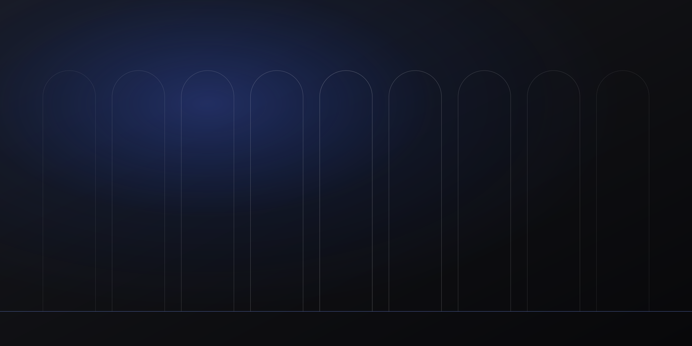

Una firma construida como un faro.
Abogados y peritos que comparten un mismo criterio: cada decisión jurídica debe apoyarse en hechos demostrables.
Propósito
Un faro no decide el rumbo: lo hace visible. Así trabajamos: unimos análisis jurídico y conocimiento técnico para que cada decisión se tome con claridad.

Identidad
Quiénes somos.
Historia
[CONTENIDO POR DEFINIR] Origen de Red Pericial, fundadores y evolución de la firma.
Misión
[CONTENIDO POR DEFINIR]
Visión
[CONTENIDO POR DEFINIR]
Qué nos diferencia
La integración real entre la estrategia jurídica y la prueba técnica, coordinadas por un mismo equipo desde el primer día.
Siguiente paso
¿Tiene un caso que necesita prueba?
Cuéntenos su situación. Le orientaremos sobre el camino jurídico y técnico más adecuado.